EasyStock Liquid Glass · 第一階段原型審閱
分支 claude/liquid-glass-prototype（基於 main c2eabac）。尚未修改正式 index.html，未部署。
兩邊都使用合成資料：改版前為 tests/preview_dashboard.cjs 的合成快照，改版後為原型內建示意資料。
改版前後比較 · 桌機 1440px
改版前 · 淺色整頁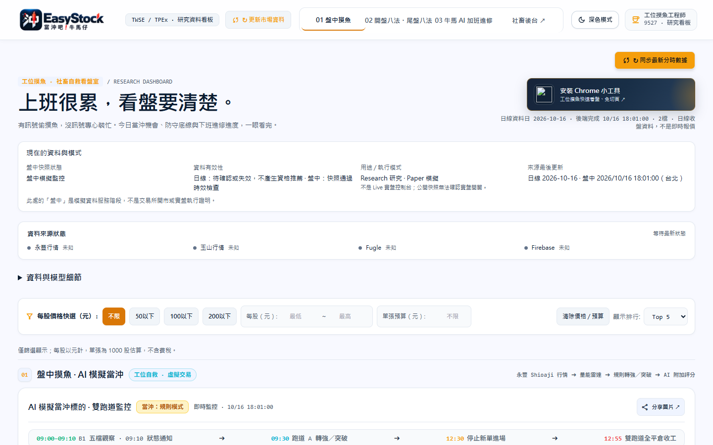
改版後 · 淺色整頁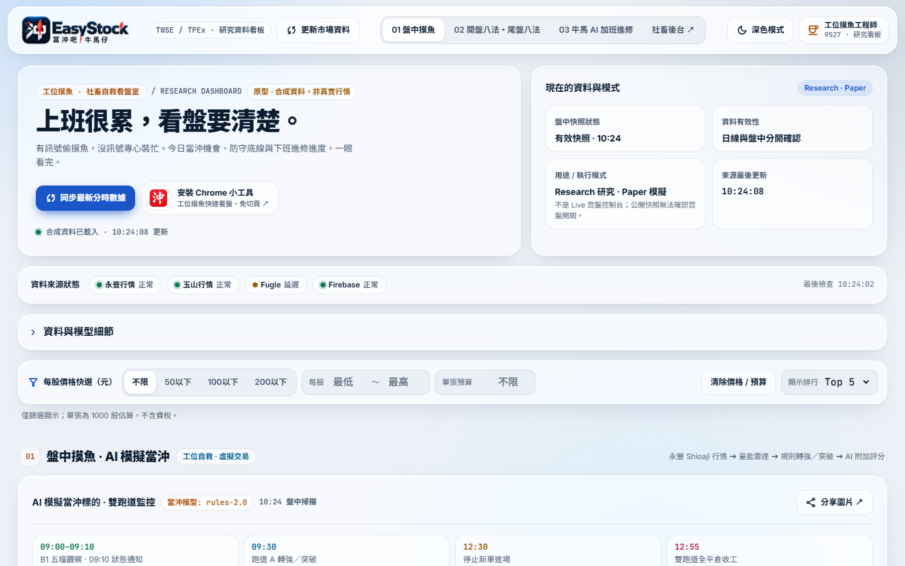
改版前 · 深色整頁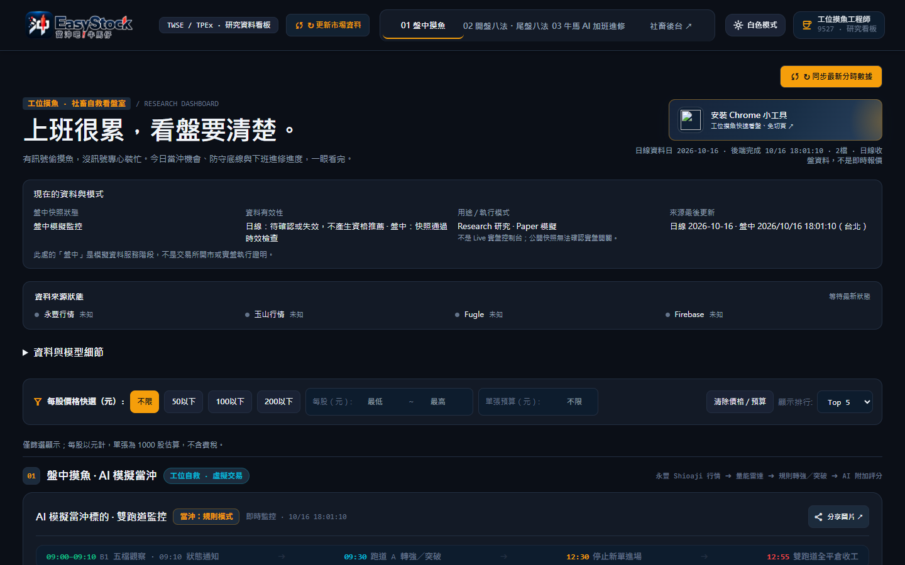
改版後 · 深色整頁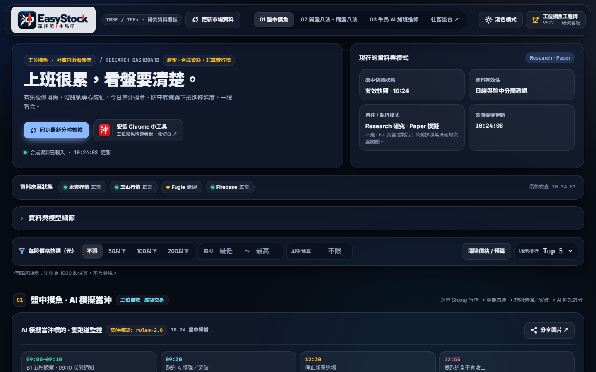
改版前後比較 · 手機 390px
前 · 淺色整頁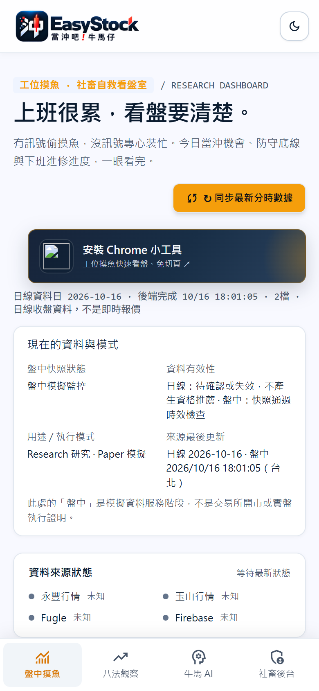
後 · 淺色整頁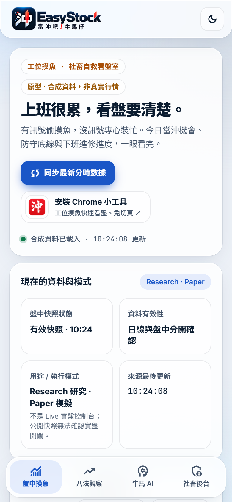
前 · 深色整頁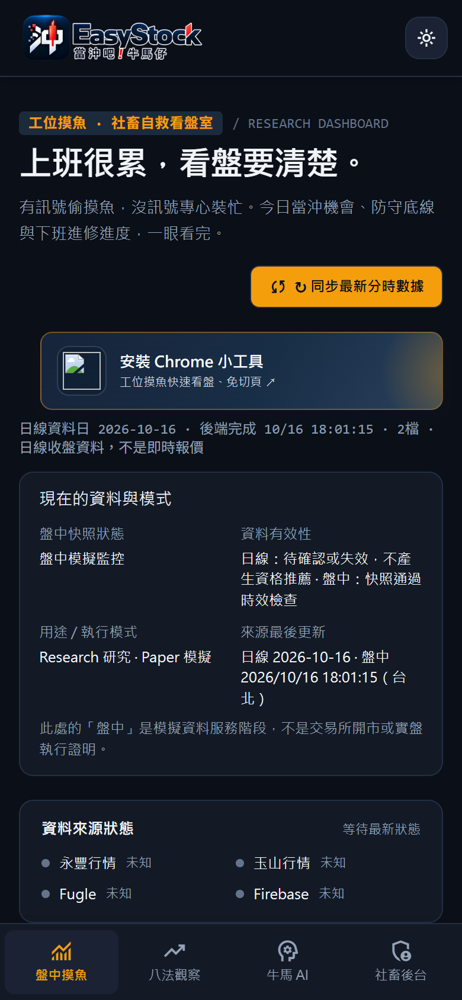
後 · 深色整頁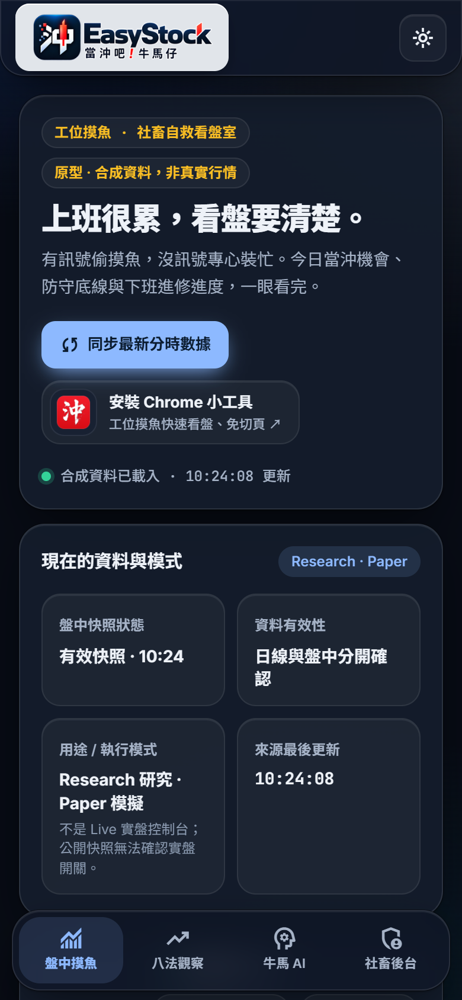
股票詳情 Modal（K 線）與 320px
桌機 · 淺色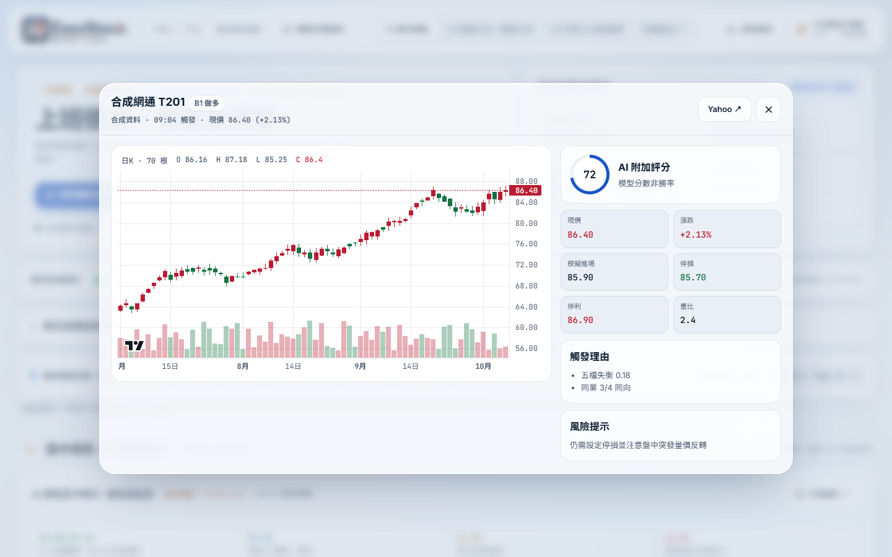
桌機 · 深色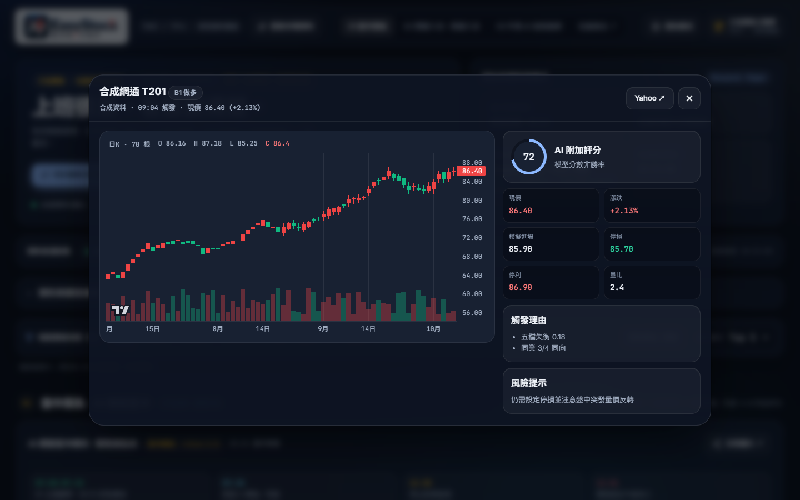
手機 Modal · 淺色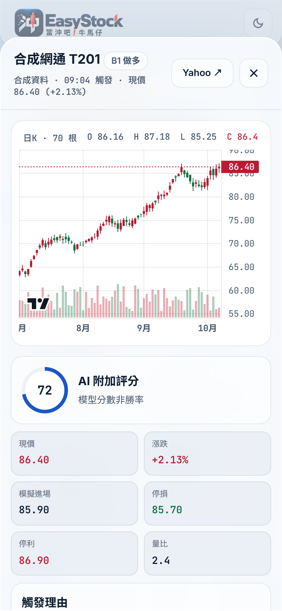
手機 Modal · 深色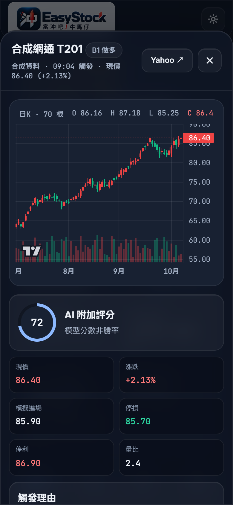
320px · 淺色整頁
320px · 深色整頁
第二階段 · 正式 index.html 套用後（合成資料）
桌機 · 淺色整頁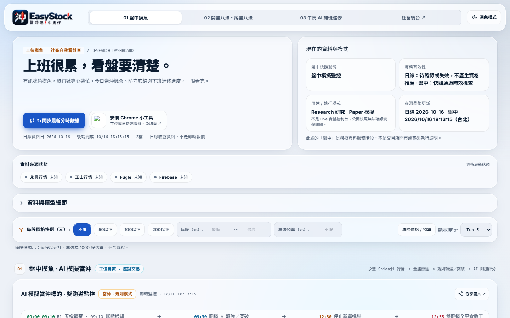
桌機 · 深色整頁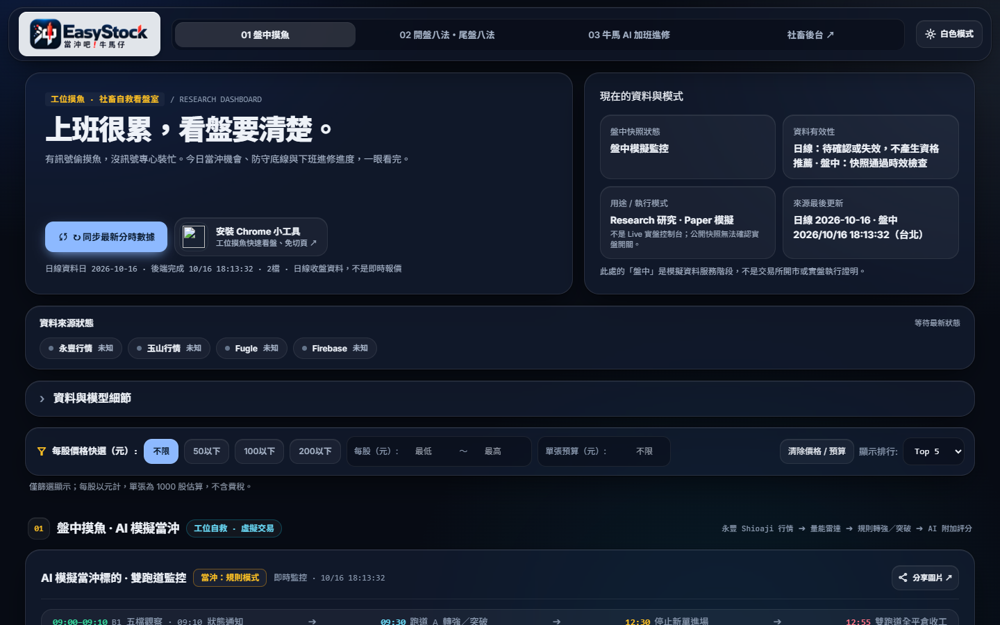
手機 · 淺色整頁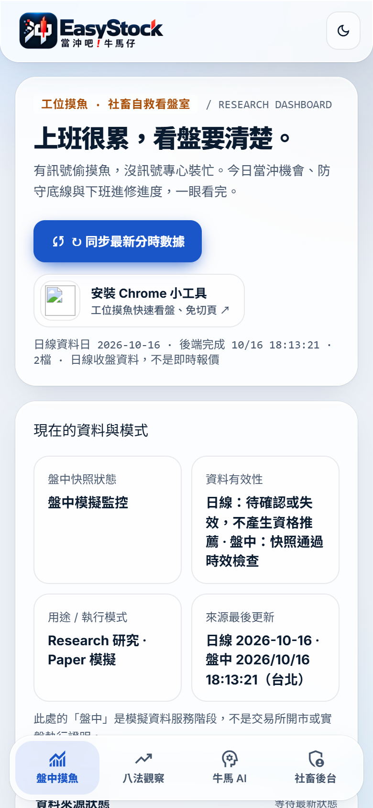
手機 · 深色整頁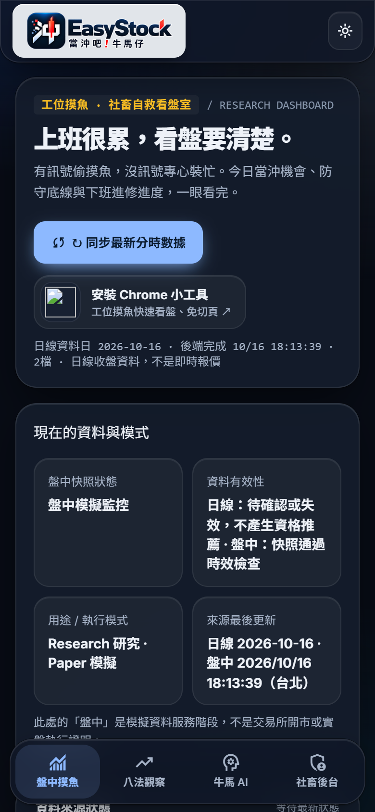
股票詳情 · 手機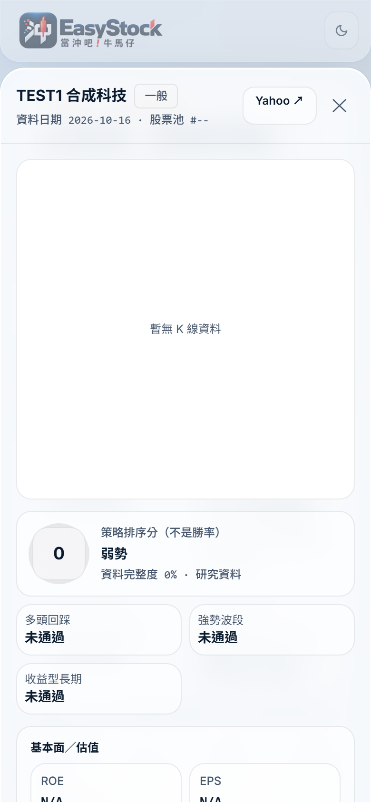
股票詳情 · 桌機深色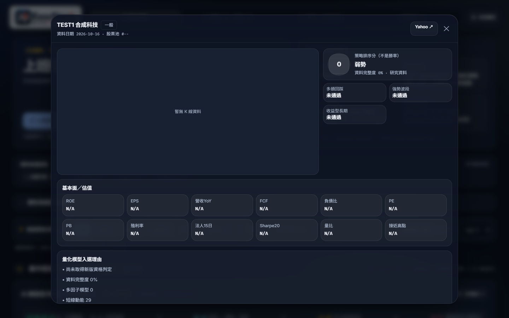
對比度 · 溢出 · 模糊圖層（自動檢查）
- 對比度以 WCAG AA 計算（一般文字 4.5:1、大字 3:1），背景為所有祖先 rgba 背景疊在畫布色上的合成色；漸層背景元素另計「需人工確認」。
- 效能：桌機只有頂層卡片（約 11 層）使用 blur；巢狀方塊一律不模糊。手機與觸控裝置卡片改為近不透明實心，只保留 Header 與底部導覽 2 層 blur，Modal 遮罩在手機不模糊。
- 不支援 backdrop-filter 時退回實心背景；系統開啟「降低透明度 / 增加對比」時全部改實心。
- 文字與數字從不套 opacity，透明感只來自 rgba 背景。
設計重點與待 Owner 確認
- 色系：互動狀態（導覽 active、篩選、主按鈕、焦點框）改為淡藍；琥珀色只留給品牌標記與區塊編號。淺色琥珀文字改 #A84E07 以通過 AA。
- 漲紅跌綠：K 線沿用 main 的
--up / --down；深色模式的文字另用 --up-text #FF7A7A、--down-text #2DD4A0，因原本 #EF4444 在玻璃上只有 3.3–3.8:1。
- Logo：深色模式下原 Banner 的深藍字幾乎看不見（main 目前也是），原型加淺色霧面底板，不改圖檔與比例。
- Bento：Hero（7 格）＋資料與模式（5 格）；牛馬 AI 進修日為 2×2 大格，其餘統計小格。導覽與區塊順序完全依 main：01 盤中摸魚、02 八法、03 牛馬 AI、社畜後台。
- 手機底部導覽：浮動玻璃膠囊、4 項、active 為淡藍底＋實心圖示，保留 safe-area。
- 股票詳情：桌機置中玻璃面板；手機改為由下滑出的 sheet。K 線區塊用實心底，避免顏色被背景影響。